← Start Now! — Meditation and Spiritual Exercises
The Christian-Gnostic Path
Learn this chapter through its own lessons, then compare the relevant source passages.
PDF 231–254 · 3 teaching lessons
John’s opening and the seven Christian stages
Understand a specifically Christian contemplative path.
Christian morning and evening programmes
Follow the relationships within a particular historical programme.
The Our Father versions and inward renewal
Read prayer with its particular theology and purpose.
Practice texts and source reader
These are selected source pages from this chapter, including its longer practice texts. The original English page is the reference for uncertain wording or layout. The OCR transcription may contain errors and is not a newly verified edition. Open a source image at full size to read its details.
Source PDF position 235 · English
Open the original source page at full size

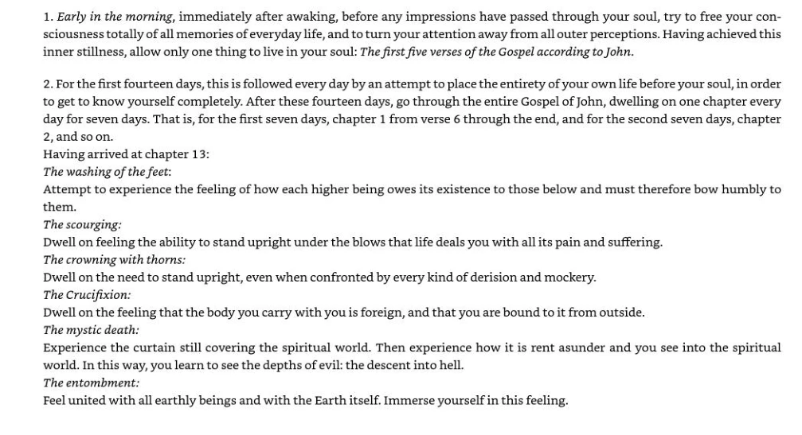
Read the searchable source transcription
1. Early in the morning, immediately after awaking, before any impressions have passed through your soul, try to free your consciousness totally of all memories of everyday life, and to turn your attention away from all outer perceptions. Having achieved this inner stillness, allow only one thing to live in your soul: The first five verses of the Gospel according to John.
2. For the first fourteen days, this is followed every day by an attempt to place the entirety of your own life before your soul, in order
to get to know yourself completely. After these fourteen days, go through the entire Gospel of John, dwelling on one chapter every day for seven days. That is, for the first seven days, chapter 1 from verse 6 through the end, and for the second seven days, chapter 2,and so on.
Having arrived at chapter 13:
The washing of the feet:
Attempt to experience the feeling of how each higher being owes its existence to those below and must therefore bow humbly to them.
The scourging:
Dwell on feeling the ability to stand upright under the blows that life deals you with all its pain and suffering.
The crowning with thorns:
Dwell on the need to stand upright, even when confronted by every kind of derision and mockery.
The Crucifixion:
Dwell on the feeling that the body you carry with you is foreign, and that you are bound to it from outside.
The mystic death:
Experience the curtain still covering the spiritual world. Then experience how it is rent asunder and you see into the spiritual world. In this way, you learn to see the depths of evil: the descent into hell.
The entombment:
Feel united with all earthly beings and with the Earth itself. Immerse yourself in this feeling.Source PDF position 236 · English
Open the original source page at full size

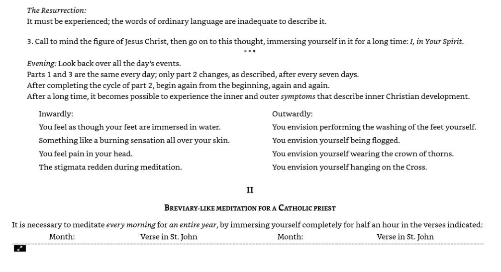
Read the searchable source transcription
The Resurrection:
It must be experienced; the words of ordinary language are inadequate to describe it.
3. Call to mind the figure of Jesus Christ, then go on to this thought, immersing yourself in it for a long time: J, in Your Spirit.
Evening: Look back over all the day’s events.
Parts 1 and 3 are the same every day; only part 2 changes, as described, after every seven days.
After completing the cycle of part 2, begin again from the beginning, again and again.
After a long time, it becomes possible to experience the inner and outer symptoms that describe inner Christian development.
Inwardly: You feel as though your feet are immersed in water. Something like a burning sensation all over your skin. You feel pain in your head. The stigmata redden during meditation.
Outwardly: You envision performing the washing of the feet yourself. You envision yourself being flogged. You envision yourself wearing the crown of thorns. You envision yourself hanging on the Cross.
Il
### BREVIARY-LIKE MEDITATION FOR A CATHOLIC PRIEST
It is necessary to meditate every morning for an entire year, by immersing yourself completely for half an hour in the verses indicated:
Month:
Verse in St. John
Month:
Verse in St. JohnSource PDF position 237 · English
Open the original source page at full size

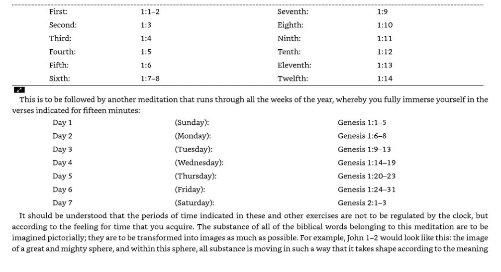
Read the searchable source transcription
First:
Second:
1:1-2
1:3
Seventh:
Eighth:
1:9
1:10
Third:
1:4
Ninth:
1:11
Fourth: Fifth:
1:5
1:6
Tenth: Eleventh:
1:12
1:13
Fa
Sixth:
1:7-8
Twelfth:
1:14
This is to be followed by another meditation that runs through all the weeks of the year, whereby you fully immerse yourself in the verses indicated for fifteen minutes:
Day 1
Day 2
Day 3
Day 4
Day 5
Day 6
Day 7
(Sunday): (Monday): (Tuesday): (Wednesday): (Thursday): (Friday): (Saturday):
Genesis 1:1-5
Genesis 1:6-8
Genesis 1:9-13
Genesis 1:14-19
Genesis 1:20-23
Genesis 1:24-31
Genesis 2:1-3
It should be understood that the periods of time indicated in these and other exercises are not to be regulated by the clock, but according to the feeling for time that you acquire. The substance of all of the biblical words belonging to this meditation are to be imagined pictorially; they are to be transformed into images as much as possible. For example, John 1-2 would look like this: the image of a great and mighty sphere, and within this sphere, all substance is moving in such a way that it takes shape according to the meaningSource PDF position 238 · English
Open the original source page at full size

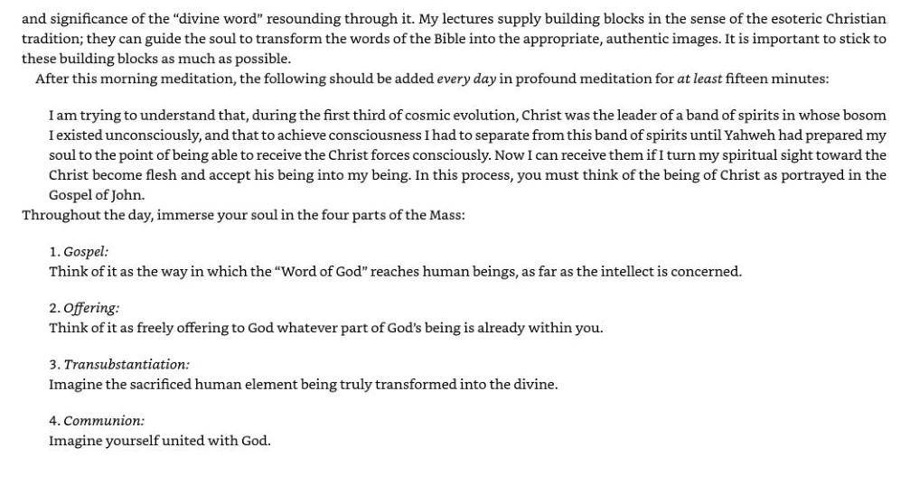
Read the searchable source transcription
and significance of the “divine word” resounding through it. My lectures supply building blocks in the sense of the esoteric Christian tradition; they can guide the soul to transform the words of the Bible into the appropriate, authentic images. It is important to stick to these building blocks as much as possible.
After this morning meditation, the following should be added every day in profound meditation for at least fifteen minutes:
I am trying to understand that, during the first third of cosmic evolution, Christ was the leader of a band of spirits in whose bosom I existed unconsciously, and that to achieve consciousness | had to separate from this band of spirits until Yahweh had prepared my soul to the point of being able to receive the Christ forces consciously. Now I can receive them if 1 turn my spiritual sight toward the Christ become flesh and accept his being into my being. In this process, you must think of the being of Christ as portrayed in the Gospel of John.
Throughout the day, immerse your soul in the four parts of the Mass:
1. Gospel:
Think of it as the way in which the “Word of God” reaches human beings, as far as the intellect is concerned.
2. Offering:
Think of it as freely offering to God whatever part of God's being is already within you.
3. Transubstantiation:
Imagine the sacrificed human element being truly transformed into the divine.
4. Communion:
Imagine yourself united with God.Source PDF position 239 · English
Open the original source page at full size

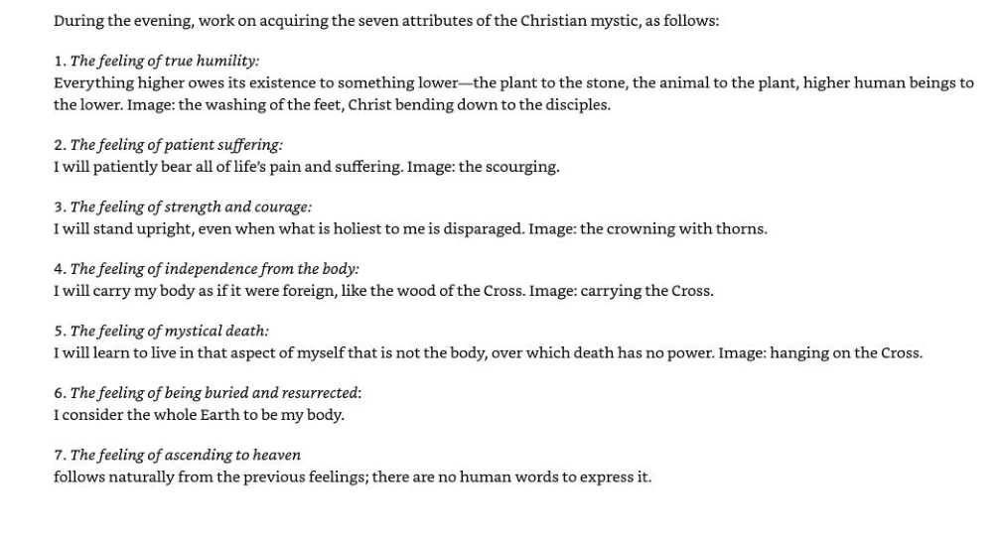
Read the searchable source transcription
During the evening, work on acquiring the seven attributes of the Christian mystic, as follows:
1. The feeling of true humility:
Everything higher owes its existence to something lower—the plant to the stone, the animal to the plant, higher human beings to the lower. Image: the washing of the feet, Christ bending down to the disciples.
2. The feeling of patient suffering:
I will patiently bear all of life’s pain and suffering. Image: the scourging.
3. The feeling of strength and courage:
I will stand upright, even when what is holiest to me is disparaged. Image: the crowning with thorns.
4. The feeling of independence from the body:
I will carry my body as if it were foreign, like the wood of the Cross. Image: carrying the Cross.
5. The feeling of mystical death:
I will learn to live in that aspect of myself that is not the body, over which death has no power. Image: hanging on the Cross.
6. The feeling of being buried and resurrected:
I consider the whole Earth to be my body.
7. The feeling of ascending to heaven
follows naturally from the previous feelings; there are no human words to express it.Source PDF position 240 · English
Open the original source page at full size

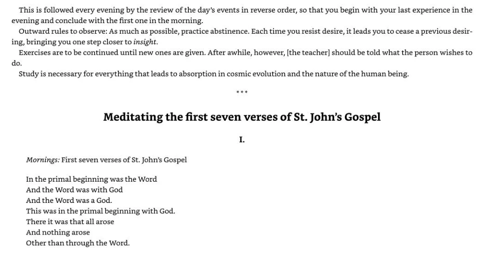
Read the searchable source transcription
This is followed every evening by the review of the day’s events in reverse order, so that you begin with your last experience in the evening and conclude with the first one in the morning.
Outward rules to observe: As much as possible, practice abstinence. Each time you resist desire, it leads you to cease a previous desiring, bringing you one step closer to insight.
Exercises are to be continued until new ones are given. After awhile, however, [the teacher] should be told what the person wishes to do.
Study is necessary for everything that leads to absorption in cosmic evolution and the nature of the human being.
eee
Meditating the first seven verses of St. John’s Gospel
I.
Mornings: First seven verses of St. John’s Gospel
In the primal beginning was the Word
And the Word was with God
And the Word was a God.
This was in the primal beginning with God. There it was that all arose
And nothing arose
Other than through the Word.Source PDF position 241 · English
Open the original source page at full size

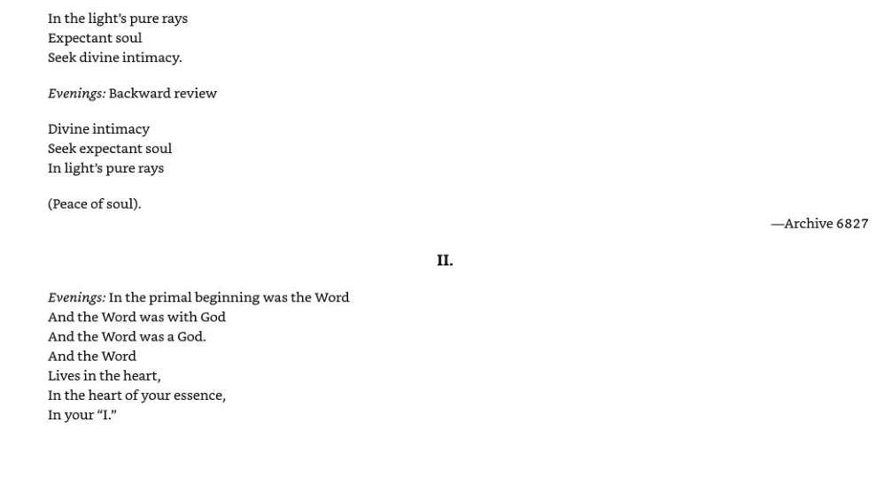
Read the searchable source transcription
In the light’s pure rays Expectant soul Seek divine intimacy.
Evenings: Backward review
Divine intimacy Seek expectant soul In light’s pure rays
(Peace of soul).
Evenings: In the primal beginning was the Word And the Word was with God
And the Word was a God.
And the Word
Lives in the heart,
In the heart of your essence,
In your “I.”
Il.
—Archive 6827Source PDF position 242 · English
Open the original source page at full size

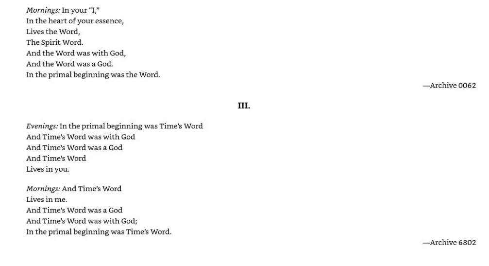
Read the searchable source transcription
Mornings: In your “I,”
In the heart of your essence,
Lives the Word,
The Spirit Word.
And the Word was with God,
And the Word was a God.
In the primal beginning was the Word.
Evenings: In the primal beginning was Time’s Word And Time's Word was with God
And Time's Word was a God
And Time's Word
Lives in you.
Mornings: And Time's Word
Lives in me.
And Time's Word was a God
And Time’s Word was with God;
In the primal beginning was Time’s Word.
Ill.
—Archive 0062
—Archive 6802Source PDF position 243 · English
Open the original source page at full size

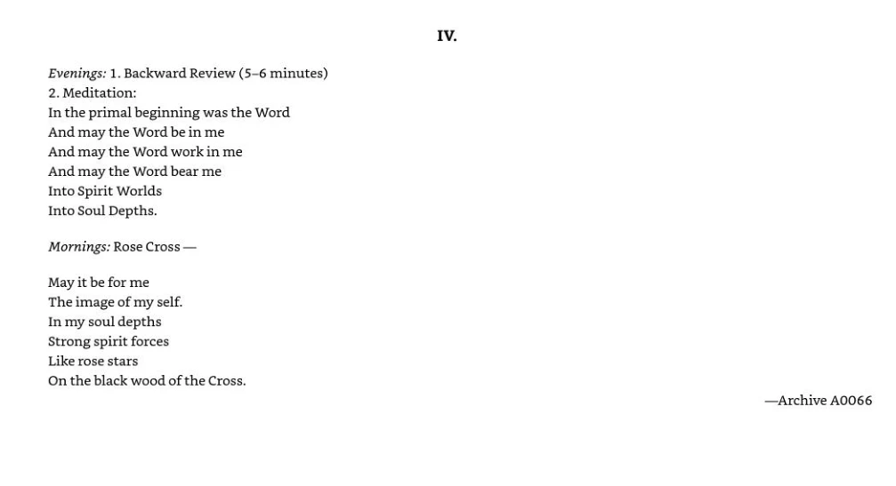
Read the searchable source transcription
Evenings: 1. Backward Review (5-6 minutes)
2. Meditation:
In the primal beginning was the Word
And may the Word be in me
And may the Word work in me
And may the Word bear me
Into Spirit Worlds
Into Soul Depths.
Mornings: Rose Cross —
May it be for me
The image of my self.
In my soul depths
Strong spirit forces
Like rose stars
On the black wood of the Cross.
IV.
—Archive A0066Source PDF position 244 · English
Open the original source page at full size

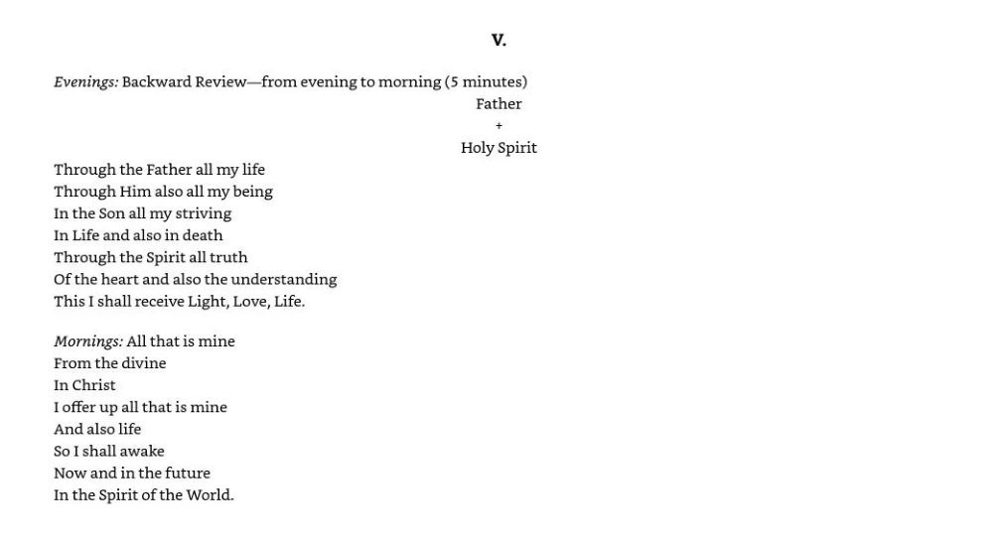
Read the searchable source transcription
V.
Evenings: Backward Review—from evening to morning (5 minutes)
Father
Through the Father all my life Through Him also all my being In the Son all my striving In Life and also in death
Through the Spirit all truth
Of the heart and also the understanding This I shall receive Light, Love, Life.
+
Holy Spirit
Mornings: All that is mine From the divine
In Christ
I offer up all that is mine And also life
So I shall awake
Now and in the future
In the Spirit of the World.Source PDF position 245 · English
Open the original source page at full size

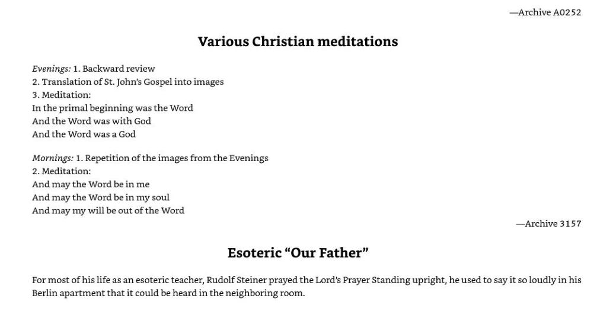
Read the searchable source transcription
### Various Christian meditations
Evenings: 1. Backward review
2. Translation of St. John’s Gospel into images
3. Meditation:
In the primal beginning was the Word
And the Word was with God
And the Word was a God
Mornings: 1. Repetition of the images from the Evenings
2. Meditation:
And may the Word be in me And may the Word be in my soul And may my will be out of the Word
—Archive A0252
—Archive 3157
### Esoteric “Our Father”
For most of his life as an esoteric teacher, Rudolf Steiner prayed the Lord’s Prayer Standing upright, he used to say it so loudly in his Berlin apartment that it could be heard in the neighboring room.Source PDF position 246 · English
Open the original source page at full size

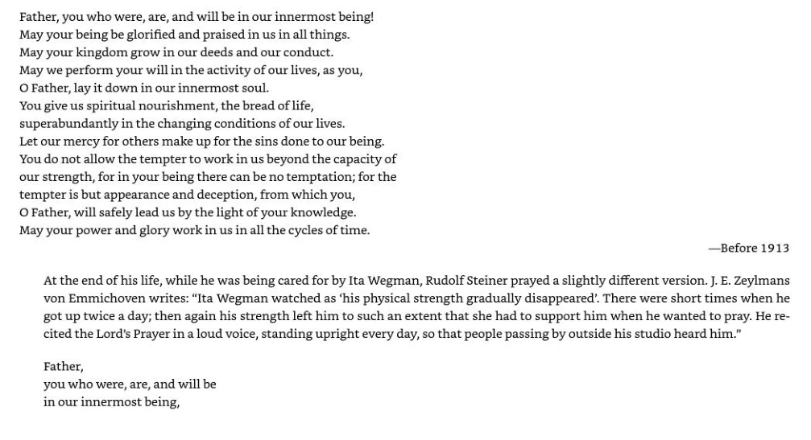
Read the searchable source transcription
Father, you who were, are, and will be in our innermost being! May your being be glorified and praised in us in all things.
May your kingdom grow in our deeds and our conduct.
May we perform your will in the activity of our lives, as you,
O Father, lay it down in our innermost soul.
You give us spiritual nourishment, the bread of life, superabundantly in the changing conditions of our lives.
Let our mercy for others make up for the sins done to our being. You do not allow the tempter to work in us beyond the capacity of our strength, for in your being there can be no temptation; for the tempter is but appearance and deception, from which you,
O Father, will safely lead us by the light of your knowledge.
May your power and glory work in us in all the cycles of time.
—Before 1913
At the end of his life, while he was being cared for by Ita Wegman, Rudolf Steiner prayed a slightly different version. J. E. Zeylmans
von Emmichoven writes: “Ita Wegman watched as ‘his physical strength gradually disappeared’. There were short times when he got up twice a day; then again his strength left him to such an extent that she had to support him when he wanted to pray. He re- cited the Lord's Prayer in a loud voice, standing upright every day, so that people passing by outside his studio heard him.”
Father, you who were, are, and will be in our innermost being,Source PDF position 247 · English
Open the original source page at full size

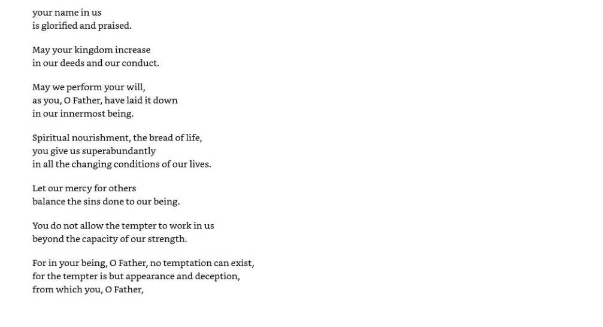
Read the searchable source transcription
your name in us is glorified and praised.
May your kingdom increase in our deeds and our conduct.
May we perform your will, as you, O Father, have laid it down in our innermost being.
Spiritual nourishment, the bread of life, you give us superabundantly in all the changing conditions of our lives.
Let our mercy for others balance the sins done to our being.
You do not allow the tempter to work in us beyond the capacity of our strength.
For in your being, O Father, no temptation can exist, for the tempter is but appearance and deception, from which you, O Father,Source PDF position 248 · English
Open the original source page at full size

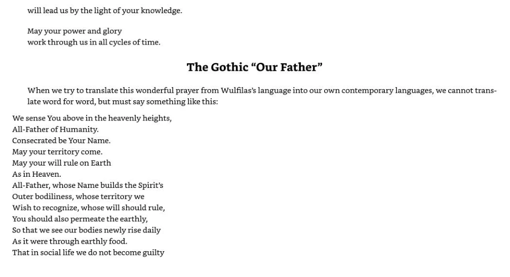
Read the searchable source transcription
will lead us by the light of your knowledge.
May your power and glory work through us in all cycles of time.
### The Gothic “Our Father”
When we try to translate this wonderful prayer from Wulfilas’s language into our own contemporary languages, we cannot translate word for word, but must say something like this:
We sense You above in the heavenly heights, All-Father of Humanity.
Consecrated be Your Name.
May your territory come.
May your will rule on Earth
As in Heaven.
All-Father, whose Name builds the Spirit’s Outer bodiliness, whose territory we Wish to recognize, whose will should rule, You should also permeate the earthly,
So that we see our bodies newly rise daily As it were through earthly food.
That in social life we do not become guiltySource PDF position 249 · English
Open the original source page at full size

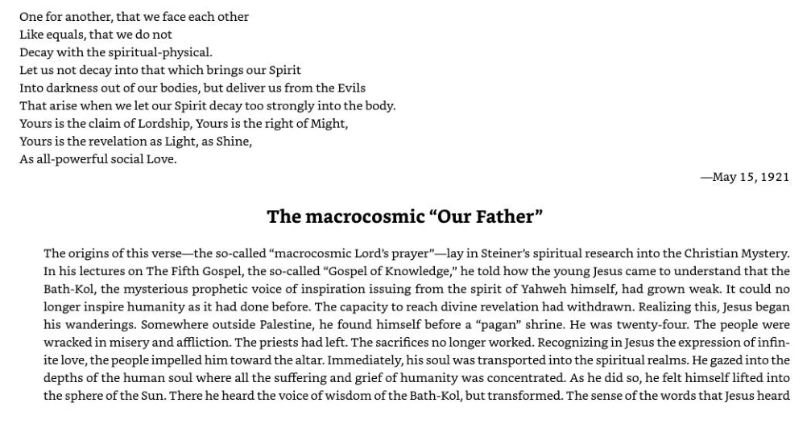
Read the searchable source transcription
One for another, that we face each other Like equals, that we do not Decay with the spiritual-physical. Let us not decay into that which brings our Spirit Into darkness out of our bodies, but deliver us from the Evils That arise when we let our Spirit decay too strongly into the body. Yours is the claim of Lordship, Yours is the right of Might, Yours is the revelation as Light, as Shine, As all-powerful social Love.
—May 15,1921
### The macrocosmic “Our Father”
The origins of this verse—the so-called “macrocosmic Lord’s prayer”—lay in Steiner’s spiritual research into the Christian Mystery. In his lectures on The Fifth Gospel, the so-called “Gospel of Knowledge,” he told how the young Jesus came to understand that the Bath-Kol, the mysterious prophetic voice of inspiration issuing from the spirit of Yahweh himself, had grown weak. It could no longer inspire humanity as it had done before. The capacity to reach divine revelation had withdrawn. Realizing this, Jesus began his wanderings. Somewhere outside Palestine, he found himself before a “pagan” shrine. He was twenty-four. The people were wracked in misery and affliction. The priests had left. The sacrifices no longer worked. Recognizing in Jesus the expression of infinite love, the people impelled him toward the altar. Immediately, his soul was transported into the spiritual realms. He gazed into the depths of the human soul where all the suffering and grief of humanity was concentrated. As he did so, he felt himself lifted into the sphere of the Sun. There he heard the voice of wisdom of the Bath-Kol, but transformed. The sense of the words that Jesus heardSource PDF position 250 · English
Open the original source page at full size

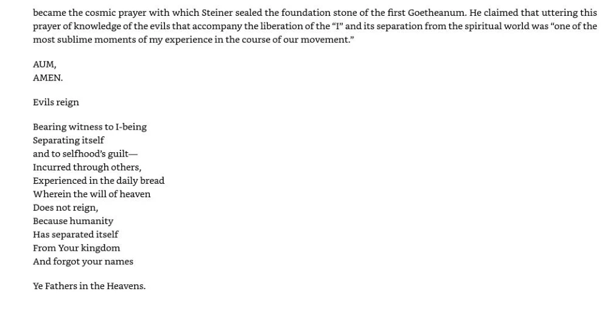
Read the searchable source transcription
became the cosmic prayer with which Steiner sealed the foundation stone of the first Goetheanum. He claimed that uttering this prayer of knowledge of the evils that accompany the liberation of the “I” and its separation from the spiritual world was “one of the most sublime moments of my experience in the course of our movement.”
AUM, AMEN.
Evils reign
Bearing witness to I-being Separating itself
and to selfhood’s guilt— Incurred through others, Experienced in the daily bread Wherein the will of heaven
Does not reign,
Because humanity
Has separated itself
From Your kingdom
And forgot your names
Ye Fathers in the Heavens.